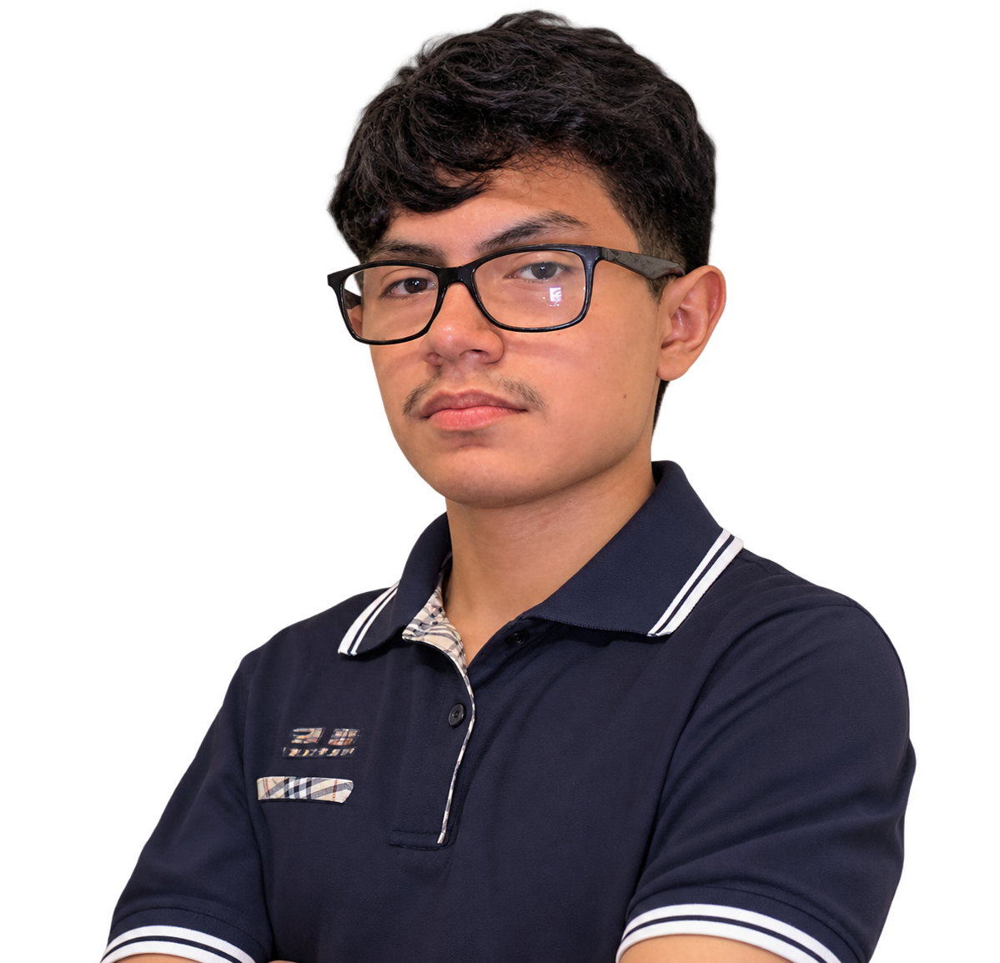

Una idea con fe.
Un equipo con corazón.
Selah comienza con personas que quieren poner su creatividad al servicio de algo más grande: una comunidad donde podamos compartir la fe y crecer juntos en Cristo.

Kevin Isaac G.C.
CEO Y FUNDADOR DE SELAH
Programador con una convicción: la tecnología también puede acercarnos a Dios y a los demás.
Kevin tiene 16 años, también es músico y está dedicando su tiempo y creatividad a construir Selah, una red social cristiana pensada para compartir contenido con propósito, crear vínculos y acompañar el crecimiento espiritual.
Selah es su tercer proyecto. Los dos anteriores le enseñaron que una idea necesita tiempo, constancia y espacio para crecer. Hoy quiere llevar ese aprendizaje a una nueva etapa y dedicarle a Selah la atención que necesita para desarrollarse.
Su visión es reunir a personas alrededor de la fe: un lugar para compartir lo que Dios hace en nuestras vidas, descubrir talentos y animarnos a caminar más cerca de Cristo.
CEO · Programador · Responsable de marketing · Gestor del proyecto
Dulce Lluvia M.C.
DISEÑADORA DE SELAH
Una amistad que también se convirtió en una forma de crear juntos.
Dulce, amiga de Kevin, se ofreció a colaborar en el diseño de la aplicación. Así se sumó a Selah: compartiendo su creatividad para ayudar a dar forma a este proyecto desde sus primeras etapas.
Mientras la app sigue en diseño y desarrollo, su colaboración forma parte de ese comienzo: convertir una visión compartida en una experiencia que la comunidad pueda conocer y sentir como suya.
Diseñadora · Diseñadora de interfaces (UI) · Conceptualización visual de interfaces
Tu ayuda puede ser parte
de este comienzo.
¿Te gustaría ayudar a construir Selah? Si compartes el propósito y quieres aportar tu tiempo, tus ideas o tus habilidades, nos encantaría conocerte.
Por ahora, la colaboración es voluntaria y sin remuneración. A medida que Selah crezca, podrían surgir oportunidades de compensación para quienes sigan formando parte del proyecto, aunque hoy no podemos garantizar pagos ni beneficios futuros.
Queremos conocerte
En tu mensaje, cuéntanos:
- Quién eres y qué te inspira de Selah.
- Qué habilidades puedes aportar y en qué te gustaría ayudar.
- Cuánto tiempo podrías dedicar al proyecto.